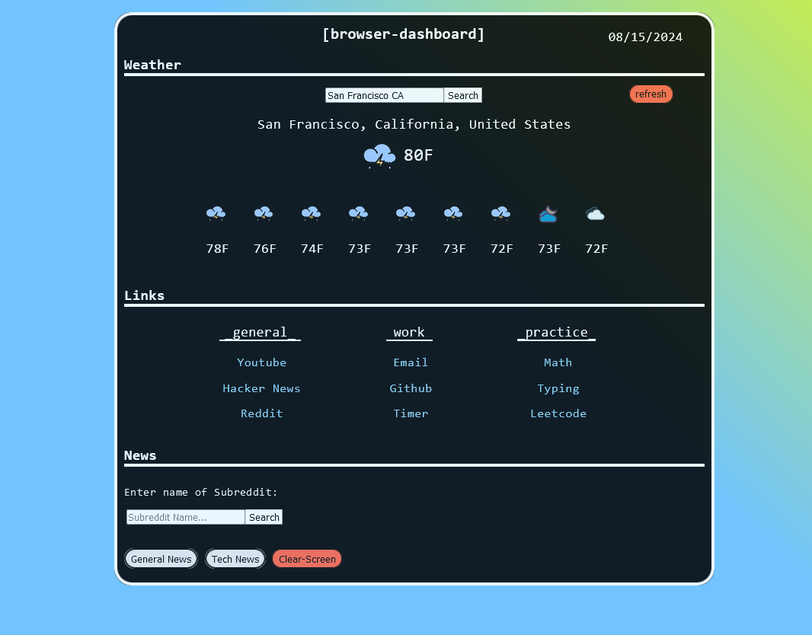

Intro
Here is a test website using the simple-css library that I will configure to show off my CV, Programming Projects and other things related to my Github and Personal Life.
Projects
(Yes I name everything in pairs of two)
- Browser-Dashboard
startpage written in HTML and JS 
Wikipedia Recreation written in PHP and MySQL
Python project that utilizes LLM's and Web-Scraping to anaylze headlines'
C++ Calculator written using the Raylib Library
Personal Life
In my personal life I like to go Hiking, Fishing, Hunting, and outdoor activities in general. I also like to program in my free time and work on personal projects. I also enjoy art such as painting, music, and reading books. pictured here below is a painting from Friedrich Voltz A German painter.
![[Hudson-School-Painting]](img/Freidrich_Voltz.jpg)